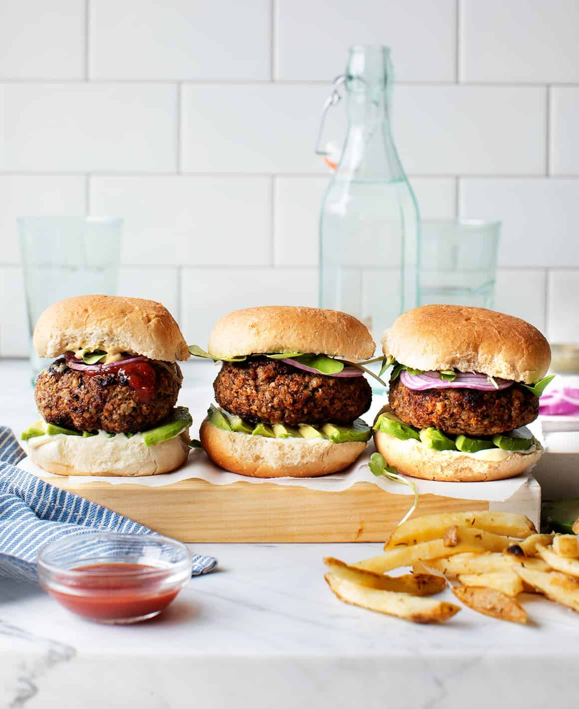

Burger

Ingredients
- 2 tablespoons extra-virgin olive oil, plus more for drizzling
- 2 shallots, chopped (⅔ cup)
- 16 ounces mushrooms, mix of shiitake + portobello, stemmed and diced
- 2 tablespoons tamari
- 2 tablespoons balsamic vinegar
- 1 tablespoon mirin, or ½ teaspoon maple syrup
- 2 garlic cloves, minced
- ½ teaspoon smoked paprika
- 2 teaspoons sriracha, more if desired
- ½ cup chopped walnuts
- ¼ cup ground flaxseed
- 2 cups cooked short-grain brown rice, freshly cooked so that it’s sticky*
- 1 cup panko bread crumbs, divided
- Vegan Worcestershire sauce, for brushing
- Nonstick cooking spray, for grilling
- Hamburger buns and desired burger fixings
- Sea salt and freshly ground black pepper
Preparation
- Heat the olive oil in a medium skillet over medium heat. Add the shallot and sauté until soft, 1 minute. Add the mushrooms and a generous pinch of salt, and sauté until soft and browned, 6 to 9 minutes, turning down the heat slightly, as needed.
- Stir in the tamari, vinegar, and mirin. Stir, reduce the heat, then add the garlic, smoked paprika, and sriracha. Remove the pan from the heat and let cool slightly.
- In a food processor, combine the sautéed mushrooms, walnuts, flaxseed, brown rice, and ½ cup of the panko. Pulse until just combined. The mixture should hold together when pinched, but it should still have some texture.
- Transfer to a large bowl and fold in the remaining panko.
- Form into 8 patties, place them on a large plate, and chill in the fridge for 1 hour.
- If you're grilling the patties, preheat a grill to medium-high heat. Brush the patties with olive oil and spray the grill with cooking spray. Place the patties on the grill and use a spatula to press down lightly. Grill for 7 minutes on the first side, flip, and grill for 6 to 7 minutes on the second side, or until well-charred and cooked through.
- Alternately, cook the patties on the stove. Heat a cast-iron skillet over medium heat. Coat the bottom of the skillet with oil and cook the patties for 5 to 6 minutes per side, or until well-charred and cooked through.
Back to Home